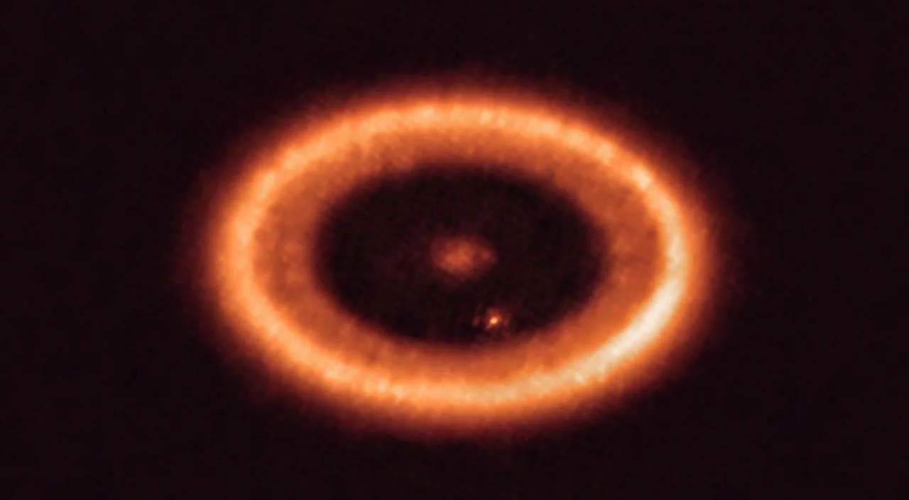

22. Juli 2021
Möglicher Nachweis eines Exomondes in Entstehung
Ein mit dem Atacama Large Millimeter/submillimeter Array (ALMA) aufgenommenes Bild zeigt das in Entstehung befindliche Planetensystem um den Stern PDS 70 in knapp 400 Lichtjahren Entfernung. Zu sehen ist die zirkumstellare Scheibe um den Stern mit Bereichen, welche bereits durch Planeten von Gas und Staub befreit wurden. Ebenfalls zu sehen ist eine zirkumplanetare Scheibe um einen der Exoplaneten des Systems (kleiner heller Punkt unterhalb der Bildmitte). In dieser Scheibe könnten Exomonde entstehen.
Quelle: Daniel Lingenhöhl: "Hier könnte ein Exomond entstehen." Online; Spektrum.de; abgerufen am 05.01.2022